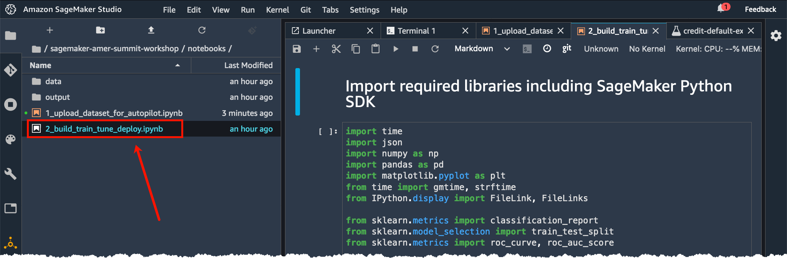

Watch the livestream to follow along with the presenter
Notebook: finetuning_huggingface.ipynb

A copy of the code from the notebook is also available below, if you prefer building your notebook from scratch by copy pasting each code cell and then running them.
Upgrade to the latest sagemaker version.
!pip install -Uq sagemaker smdebugimport ast
import json
import boto3
import numpy as np
import pandas as pd
from datetime import datetime as dt
from IPython.display import FileLink
import sagemaker
from sagemaker import TrainingJobAnalytics
from sagemaker.debugger import Rule, ProfilerRule, rule_configs
from sagemaker.debugger import ProfilerConfig, FrameworkProfile, DebuggerHookConfig
from sagemaker.huggingface import HuggingFace, HuggingFaceModel, HuggingFacePredictor
from smdebug.profiler.analysis.notebook_utils.training_job import TrainingJob
from smdebug.profiler.analysis.notebook_utils.timeline_charts import TimelineCharts
from sklearn.metrics import classification_report# permissions
sess = sagemaker.Session()
role = sagemaker.get_execution_role()
s3_client = boto3.client('s3')
bucket = sess.default_bucket()
prefix = "huggingface_classifier"
sess = sagemaker.Session(default_bucket=bucket)
print(f"sagemaker role arn: {role}")
print(f"sagemaker bucket: {sess.default_bucket()}")
print(f"sagemaker session region: {sess.boto_region_name}")df = pd.read_csv('./data/Womens Clothing E-Commerce Reviews.csv')
df = df[['Review Text', 'Rating']]
df.columns = ['text', 'label']
df['label'] = df['label'] - 1
df = df.dropna()
train, validate, test = \
np.split(df.sample(frac=1, random_state=42),
[int(.6*len(df)), int(.8*len(df))])
train.shape, validate.shape, test.shapetrain.to_csv('./data/train.csv', index=False)
validate.to_csv('./data/validate.csv', index=False)
test.to_csv('./data/test.csv', index=False)s3_client.upload_file('./data/train.csv', bucket,
f'{prefix}/data/train.csv')
s3_client.upload_file('./data/validate.csv', bucket,
f'{prefix}/data/validate.csv')
s3_client.upload_file('./data/test.csv', bucket,
f'{prefix}/data/test.csv')!mkdir ./src%%writefile src/train.py
import os
import sys
import logging
import argparse
from datasets import load_dataset
from sklearn.metrics import accuracy_score, precision_recall_fscore_support
from transformers.trainer_utils import get_last_checkpoint
from transformers import AutoModelForSequenceClassification, Trainer, TrainingArguments, AutoTokenizer
# Set up logging
logger = logging.getLogger(__name__)
logging.basicConfig(
level=logging.getLevelName("INFO"),
handlers=[logging.StreamHandler(sys.stdout)],
format="%(asctime)s - %(name)s - %(levelname)s - %(message)s",
)
if __name__ == "__main__":
logger.info(sys.argv)
parser = argparse.ArgumentParser()
# hyperparameters sent by the client are passed as command-line arguments to the script.
parser.add_argument("--epochs", type=int, default=3)
parser.add_argument("--train-batch-size", type=int, default=32)
parser.add_argument("--eval-batch-size", type=int, default=64)
parser.add_argument("--warmup_steps", type=int, default=500)
parser.add_argument("--model_name", type=str)
parser.add_argument("--learning_rate", type=str, default=5e-5)
parser.add_argument("--output_dir", type=str)
# Data, model, and output directories
parser.add_argument("--output-data-dir", type=str, default=os.environ["SM_OUTPUT_DATA_DIR"])
parser.add_argument("--model-dir", type=str, default=os.environ["SM_MODEL_DIR"])
parser.add_argument("--n_gpus", type=str, default=os.environ["SM_NUM_GPUS"])
parser.add_argument("--training_dir", type=str, default=os.environ["SM_CHANNEL_TRAIN"])
parser.add_argument("--test_dir", type=str, default=os.environ["SM_CHANNEL_TEST"])
args, _ = parser.parse_known_args()
# Set up logging
logger = logging.getLogger(__name__)
logging.basicConfig(
level=logging.getLevelName("INFO"),
handlers=[logging.StreamHandler(sys.stdout)],
format="%(asctime)s - %(name)s - %(levelname)s - %(message)s",
)
# download tokenizer
tokenizer = AutoTokenizer.from_pretrained(args.model_name)
# Load dataset
train_file = f"{args.training_dir}/train.csv"
validate_file = f"{args.test_dir}/validate.csv"
dataset = load_dataset('csv', data_files={'train': train_file,
'test': validate_file})
train_dataset = dataset['train']
test_dataset = dataset['test']
logger.info(f" loaded train_dataset length is: {len(train_dataset)}")
logger.info(f" loaded test_dataset length is: {len(test_dataset)}")
# tokenizer helper function
def tokenize(batch):
return tokenizer(batch['text'], padding='max_length', truncation=True)
# tokenize dataset
train_dataset = train_dataset.map(tokenize, batched=True)
test_dataset = test_dataset.map(tokenize, batched=True)
# set format for pytorch
train_dataset = train_dataset.rename_column("label", "labels")
train_dataset.set_format('torch', columns=['input_ids', 'attention_mask', 'labels'])
test_dataset = test_dataset.rename_column("label", "labels")
test_dataset.set_format('torch', columns=['input_ids', 'attention_mask', 'labels'])
logger.info(f" loaded train_dataset length is: {len(train_dataset)}")
logger.info(f" loaded test_dataset length is: {len(test_dataset)}")
# compute metrics function for binary classification
def compute_metrics(pred):
labels = pred.label_ids
preds = pred.predictions.argmax(-1)
precision, recall, f1, _ = precision_recall_fscore_support(labels, preds, average="weighted")
acc = accuracy_score(labels, preds)
return {"accuracy": acc, "f1": f1, "precision": precision, "recall": recall}
# download model from model hub
model = AutoModelForSequenceClassification.from_pretrained(args.model_name, num_labels=5)
# define training args
training_args = TrainingArguments(
output_dir=args.output_dir,
num_train_epochs=args.epochs,
per_device_train_batch_size=args.train_batch_size,
per_device_eval_batch_size=args.eval_batch_size,
warmup_steps=args.warmup_steps,
evaluation_strategy="epoch",
logging_dir=f"{args.output_data_dir}/logs",
learning_rate=float(args.learning_rate),
)
# create Trainer instance
trainer = Trainer(
model=model,
args=training_args,
compute_metrics=compute_metrics,
train_dataset=train_dataset,
eval_dataset=test_dataset,
)
# train model
if get_last_checkpoint(args.output_dir) is not None:
logger.info("***** continue training *****")
trainer.train(resume_from_checkpoint=args.output_dir)
else:
trainer.train()
# evaluate model
eval_result = trainer.evaluate(eval_dataset=test_dataset)
# writes eval result to file which can be accessed later in s3 ouput
with open(os.path.join(args.output_data_dir, "eval_results.txt"), "w") as writer:
print(f"***** Eval results *****")
for key, value in sorted(eval_result.items()):
writer.write(f"{key} = {value}\n")
# Saves the model to s3
trainer.save_model(args.model_dir)
tokenizer.save_pretrained(args.model_dir)# hyperparameters, which are passed into the training job
hyperparameters={'epochs': 1,
'train_batch_size': 32,
'model_name':'distilbert-base-uncased',
'output_dir':'/opt/ml/checkpoints'
}
metric_definitions=[
{'Name': 'loss', 'Regex': "'loss': ([0-9]+(.|e\-)[0-9]+),?"},
{'Name': 'learning_rate', 'Regex': "'learning_rate': ([0-9]+(.|e\-)[0-9]+),?"},
{'Name': 'eval_loss', 'Regex': "'eval_loss': ([0-9]+(.|e\-)[0-9]+),?"},
{'Name': 'eval_accuracy', 'Regex': "'eval_accuracy': ([0-9]+(.|e\-)[0-9]+),?"},
{'Name': 'eval_f1', 'Regex': "'eval_f1': ([0-9]+(.|e\-)[0-9]+),?"},
{'Name': 'eval_precision', 'Regex': "'eval_precision': ([0-9]+(.|e\-)[0-9]+),?"},
{'Name': 'eval_recall', 'Regex': "'eval_recall': ([0-9]+(.|e\-)[0-9]+),?"},
{'Name': 'eval_runtime', 'Regex': "'eval_runtime': ([0-9]+(.|e\-)[0-9]+),?"},
{'Name': 'eval_samples_per_second', 'Regex': "'eval_samples_per_second': ([0-9]+(.|e\-)[0-9]+),?"},
{'Name': 'epoch', 'Regex': "'epoch': ([0-9]+(.|e\-)[0-9]+),?"}]We specify the following rules:
ProfilerReport: runs the entire set of performance rules and create a final output report with further insights and recommendations.
# Configure a Profiler rule object
rules = [
Rule.sagemaker(rule_configs.loss_not_decreasing()),
ProfilerRule.sagemaker(rule_configs.LowGPUUtilization()),
ProfilerRule.sagemaker(rule_configs.ProfilerReport())
]The following configuration will capture system metrics at 500 milliseconds. The system metrics include utilization per CPU, GPU, memory utilization per CPU, GPU as well I/O and network.
Debugger will capture detailed profiling information from step 5 to step 15. This information includes Horovod metrics, dataloading, preprocessing, operators running on CPU and GPU.
# Specify a profiler configuration
profiler_config = ProfilerConfig(
system_monitor_interval_millis=500, framework_profile_params=FrameworkProfile(num_steps=10)
)# s3 uri where our checkpoints will be uploaded during training
job_name = "using-spot"
checkpoint_s3_uri = f's3://{bucket}/{prefix}/{job_name}/checkpoints'
# create the Estimator
huggingface_estimator = HuggingFace(entry_point='train.py',
source_dir='./src',
instance_type='ml.p3.2xlarge',
size=5,
instance_count=1,
base_job_name=job_name,
checkpoint_s3_uri=checkpoint_s3_uri,
# use_spot_instances=True,
# max_wait=3600, # This should be equal to or greater than max_run in seconds'
# max_run=1000, # expected max run in seconds
role=role,
transformers_version='4.6',
pytorch_version='1.7',
py_version='py36',
hyperparameters = hyperparameters,
metric_definitions=metric_definitions,
# Debugger-specific parameters
profiler_config=profiler_config,
debugger_hook_config=hook_config,
rules=rules,
)data = {'train': f"s3://{bucket}/{prefix}/data/train.csv",
'test': f"s3://{bucket}/{prefix}/data/validate.csv"
}
huggingface_estimator.fit(data, wait=True)# Captured metrics can be accessed as a Pandas dataframe
training_job_name = huggingface_estimator.latest_training_job.name
print(f"Training jobname: {training_job_name}")
df = TrainingJobAnalytics(training_job_name=training_job_name).dataframe()
df.head(10)While the training is still in progress you can visualize the performance data in SageMaker Studio or in the notebook. Debugger provides utilities to plot system metrics in form of timeline charts or heatmaps. Checkout out the notebook profiling_interactive_analysis.ipynb for more details. In the following code cell we plot the total CPU and GPU utilization as timeseries charts. To visualize other metrics such as I/O, memory, network you simply need to extend the list passed to select_dimension and select_events.
session = boto3.session.Session()
region = session.region_name
tj = TrainingJob(training_job_name, region)
tj.wait_for_sys_profiling_data_to_be_available()system_metrics_reader = tj.get_systems_metrics_reader()
system_metrics_reader.refresh_event_file_list()
view_timeline_charts = TimelineCharts(
system_metrics_reader,
framework_metrics_reader=None,
select_dimensions=["CPU", "GPU"],
select_events=["total"],
)The profiling report rule will create an html report profiler-report.html with a summary of builtin rules and recommenades of next steps. You can find this report in your S3 bucket.
rule_output_path = huggingface_estimator.output_path + huggingface_estimator.latest_training_job.job_name + "/rule-output"
print(f"You will find the profiler report in {rule_output_path}")s3_client.download_file(Bucket=bucket,
Key=f'using-spot-2021-07-23-17-16-24-982/rule-output/ProfilerReport/profiler-output/profiler-report.html',
Filename='./debugger_report.html')
display("Click link below to view the debugger repot.", FileLink("./debugger_report.html"))For more information about how to download and open the Debugger profiling report, see SageMaker Debugger Profiling Report in the SageMaker developer guide.
endpoint_name = f'huggingface-finetune-{dt.today().strftime('%Y-%m-%d')}'
# create Hugging Face Model Class
huggingface_model = HuggingFaceModel(
model_data=huggingface_estimator.model_data, # S3 path to your trained sagemaker model
role=role, # IAM role with permissions to create an Endpoint
transformers_version='4.6',
pytorch_version='1.7',
py_version='py36'
)
# deploy model to SageMaker Inference
predictor = huggingface_model.deploy(
initial_instance_count=1,
instance_type="ml.m5.xlarge",
endpoint_name = endpoint_name
)pred_list = []
for idx, row in test.head().iterrows():
payload = {"inputs": row['text']}
pred = predictor.predict(payload)[0]
# rename label to prediction
pred['prediction'] = pred.pop('label')
# convert prediction value to int
pred['prediction'] = int(pred['prediction'].replace('LABEL_', ''))
pred_list.append(pred)test['prediction'] = pred_list
df_test = pd.concat([test.drop(['prediction'], axis=1), test['prediction'].apply(pd.Series)], axis=1)print(classification_report(df_test['label'], df_test['prediction']))# client = boto3.client('sagemaker')
# endpoint = client.list_endpoints()['Endpoints']payload = {"inputs": [test['text'].iloc[0]]}
predictor = HuggingFacePredictor(endpoint_name=endpoint_name,
sagemaker_session=sess
)
result = predictor.predict(data=payload)[0]
print(f"Predicted \033[1m{result['label']}\033[0m with score of \033[1m{round(result['score'], 2)}\033[0m. Real label is \033[1m{test['label'].iloc[0]}\033[0m. Full sentence:\n\n{test['text'].iloc[0]}")client = boto3.client('sagemaker-runtime')
payload = {"inputs": [test['text'].iloc[0]]}
user_encode_data = json.dumps(payload).encode('utf-8')
response = client.invoke_endpoint(EndpointName=endpoint_name,
Body=user_encode_data,
ContentType='application/json'
)
result = ast.literal_eval(response['Body'].read().decode())[0]
print(f"Predicted \033[1m{result['label']}\033[0m with score of \033[1m{round(result['score'], 2)}\033[0m. Real label is \033[1m{test['label'].iloc[0]}\033[0m. Full sentence:\n\n{test['text'].iloc[0]}")Make sure you delete the SageMaker endpoints to avoid unnecessary costs:
# predictor.delete_endpoint()